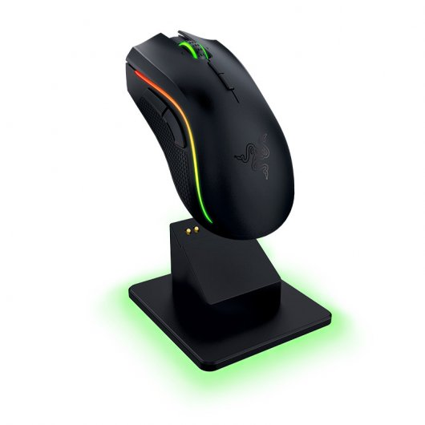
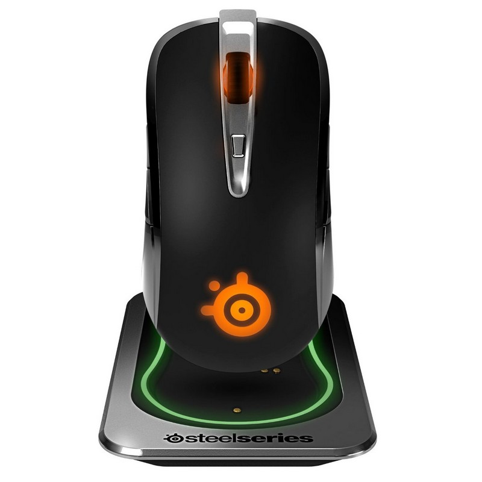
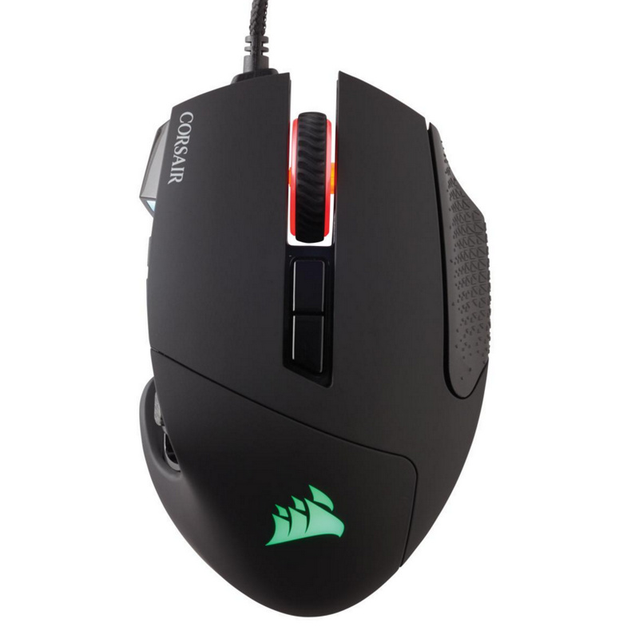

Razer Mamba
CARACTERÍSTICAS
Te presentamos en Estarter el nuevo Mamba de Razer, este ratón inalámbrico gaming cuenta con retroiluminación Chroma con posibilidad RGB.
- El sensor de ratón para juegos más preciso del mundo, con 16 000 ppp Equipado con el sensor de ratón para juegos más preciso del mundo, con 16 000 ppp, el Razer Mamba Tournament Edition ofrece una precisión incomparable, de modo que obtendrás una ventaja aún mayor en la competición. Con capacidad para rastrear incrementos de hasta 1 ppp y distancias de elevación de hasta 0,1 mm, el Razer Mamba Tournament Edition te ayudará a reaccionar instantáneamente al maniobrar para abrirte camino hasta la victoria.
- Revolucionaria tecnología ajustable Click Force* para una respuesta de clic personalizada Tanto si prefieres un clic de disparo rápido más ligero o un clic distintivo más completo, los botones Hyperesponse de Razer Mamba incorporan un mecanismo de resistencia de clic que te permiten adaptarlos a tus necesidades más personales. Selecciona diferentes niveles de resistencia para establecer tu propia respuesta del clic, tanto si es superior para un francotirador controlado como si es inferior para clics de disparos en juegos de acción en tiempo real MOBA
- Tecnología alámbrica/inalámbrica de primera categoría para una maniobrabilidad sin límites El Razer Mamba, diseñado con la tecnología alámbrica/inalámbrica líder en el sector de los juegos, te ofrece una completa libertad de movimientos sin perder un ápice de precisión ni de control. Con o sin cables, el Razer Mamba tiene un índice de respuesta de 1 ms*; esto te permitirá disfrutar del máximo rendimiento con prácticamente cero latencia. Además, puedes usar el Razer Mamba mientras se carga, de modo que nunca tengas periodos de inactividad, ni siquiera durante largas maratones de juego.
Especificaciones:
- Sensor láser 5G de 16 000 ppp
- 210 pulgadas por segundo / Aceleración 50 G
- Tecnología Click Force ajustable
- Tecnología inalámbrica para juegos
- Ultrapolling de 1000 Hz / tiempo de respuesta de 1 ms
- Ajuste de sensibilidad instantáneo
- Diseño ergonómico para diestros con agarres laterales de caucho texturizados
- Iluminación Chroma con 16,8 millones de opciones de color personalizables
- Sincronización de color entre dispositivos
- Nueve botones programables independientemente
- Rueda de desplazamiento con clic de inclinación
- Puerto de carga
- Preparado para Razer Synapse
- Cable de carga USB con fibra trenzada de 2,1 m / 7 pies
- Tamaño aproximado: 128 mm / 5 pulgadas (Longitud) x 70 mm / 2,76 pulgadas (Anchura) x 42,5 mm /1,67 pies (Altura)
- Peso aproximado: 125 g / 0.27 lbs
- Autonomía de la batería: aproximadamente 20 horas (juego continuo)*
- *La previsión de autonomía de la batería depende de su uso
SteelSeries Sensei
CARACTERÍSTICAS
El Sensei Wireless es el novedoso ratón láser de SteelSeries concebido para los jugadores (tanto zurdos como diestros) que valoran el rendimiento seguro y el espectacular diseño del Sensei. Este ratón ofrece una experiencia libre de cables y sin retrasos, un rendimiento sin igual, una personalización máxima y una apariencia única. Por eso, el Sensei Wireless demuestra que, a veces, la belleza no se queda en la superficie.
- Sensor láser de última generación
- Funciones precisas - apuntar, acelerar, levantar, snapping
- Diseño ergonómico óptimo
- Efectos de color de iluminación, intensidad y pulsación
- Vida útil de más de 30 millones de clics
Especificaciones:
- Requisitos del sistema:
- Sistema operativo Windows soportado: Si
- Sistema operativo MAC soportado: Si
- Peso y dimensiones:
- Ancho: 69 mm
- Profundidad: 129 mm
- Altura: 41 mm
- Peso del ratón: 120 g
- Control de energía:
- Fuente de energía: Batteries/Cable
- Autonomía: 20 h
- Dispositivo de entrada:
- Interfaz del dispositivo: RF Wireless+USB
- Utilizar con: Juego
- Tipo de botones: Pressed buttons
- Cantidad de botones: 8
- Tipo de desplazamiento: Rueda
- Tecnología de detección de movimientos: Laser
- Resolución de movimiento: 8200 DPI
- Uso recomendado: PC/ordenador portátil
- Rueda de desplazamiento: Si
- Botones de ratón programables: Si
- Número de ruedas de desplazamiento: 1
- Ergonomía:
- Indicadores LED: Si
- Longitud de cable: 2 m
- Diseño:
- Factor de forma: mano derecha
- Color del producto: Negro
- Iluminación: Si
- Coloración de superficie: Monótono
Corsair Scimitar
CARACTERÍSTICAS
El ratón óptico Scimitar RGB Gaming revoluciona su sector con su sistema de control Key Slider, sus 12 botones mecánicos laterales y su sensor óptico de 12.000 DPI a prueba de profesionales. Construido específicamente para ofrecer la experiencia de juego MOBA/MMO definitiva.
Libere su pulgar Su sistema de control exclusivo Key Slider, pendiente de patente, proporciona unas posibilidades de personalización sin precedentes. Los 8 mm de recorrido del key slide con bloqueo seguro ponen a su alcance todos los botones. Interruptores mecánicos Los 12 botones mecánicos laterales representan una ventaja competitiva sin precedentes. Están diseñados con especificaciones de jugadores profesionales: feedback táctil ultraconsistente y acción precisa. - Sensor óptico de 12.000 DPI sin aceleración Aproveche la potencia a prueba de profesionales del sensor óptico de alto rendimiento de 12.000 DPI para una experiencia de juego con precisión de píxel a píxel. Personalizable con CUE para que el control durante el juego más intenso sea sobresaliente.
- Cuatro zonas de iluminación RGB Su brillante retroiluminación le sumergirá en el juego gracias a su iluminación adaptable prácticamente ilimitada. Cada una de las cuatro zonas puede configurarse independientemente.
- La potencia de CUE Lleve a la batalla toda la potencia de su ratón. No se limite a configurar el ratón: prográmelo con cuentas atrás MMO personalizadas y macros dobles, iluminación RGB, matrices DPI y mucho más.
- Tiempo de respuesta ultrarrápido Forzar los límites de la máxima tasa de transferencia USB: su tiempo de respuesta ultrarrápida de 1 ms asegura que cada clic cuenta. La capacidad de respuesta sin retardo es crucial cuando todo está en juego.
- Confort supremo El Scimitar RGB está diseñado para adaptarse al contorno de la palma de la mano y obtener el máximo nivel de confort, sin importar el tamaño de la mano o la forma de sujetarlo.
Especificaciones:
- Compatibilidad:
- PC con puerto USB
- Windows 10, Windows 8 o Windows 7
- Se requiere una conexión a Internet para descargar el software Corsair Utility Engine
- Contenido del paquete:
- Ratón óptico Scimitar RGB MOBA/MMO Gaming
- Guía de inicio rápido